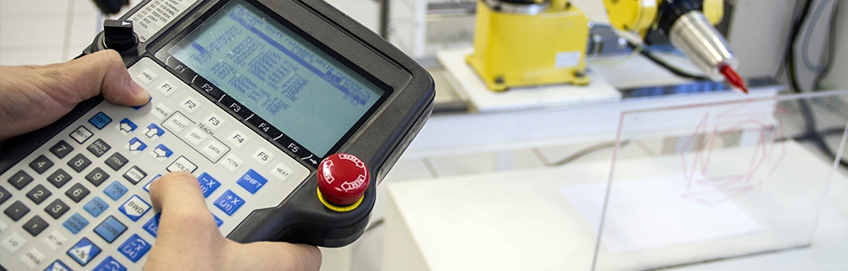

Curso Técnico em Eletroeletrônica
Curso Técnico em Eletroeletrônica

Característica
As mais recentes inovações tecnológicas mostram que a eletroeletrônica, que contempla serviços ligados à área de eletricidade, oferece um amplo campo de atuação para os trabalhadores, incluindo os sistemas de produção de manufatura, utilidades, serviços, comunicação, automação, construção, comércio e segurança pública.
O Técnico em Eletroeletrônica prepara profissionais aptos a lidar em diferentes áreas do conhecimento. O curso é voltado principalmente para a área da eletrônica, o que o diferencia do Técnico em Automação Industrial, no qual a atenção está voltada para os processos de automação industrial.
Áreas de Atuação
O profissional técnico em eletroeletrônica pode desempenhar seus conhecimentos e habilidades em:
- eletrônica analógica, digital e de potência
- empresas de manutenção, automação e na prestação de serviços
- eletricidade básica
Carga Horária
1200h
Turno
Noturno
Duração Mínima
2 anos e meio
Requisito Mínimo
Ensino Médio concluído ou em curso
Coordenação
Luís Paulo Hauschild
Centro de Educação Profissional
Fone: (51) 3714-7000 ramais 5294 e 5358
Sala 408-9
Contato